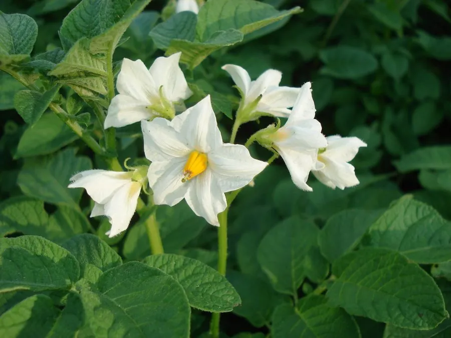

农作物与经济植物 · 植物界
马铃薯 Solanum tuberosum

马铃薯的地下块茎富含淀粉，既是重要的粮食作物，也是餐桌上的常见蔬菜，产量高、适应性强，栽培广泛。
- 分类
- 门被子植物门纲双子叶植物纲目茄目科茄科属茄属
- 栖息环境
- 冷凉高地的疏松沙壤土，喜凉爽湿润、昼夜温差大的气候
- 地理分布
- 原产南美安第斯山区，现主产于中国、印度、俄罗斯与欧洲
- 保护级别
- 暂无评估（栽培作物）
物种志
马铃薯是茄科一年生草本，株高 0.4–1 m，地上茎直立或半蔓生，羽状复叶，小叶卵形，全株有细毛。地下茎的末端膨大形成块茎，即我们食用的“土豆”，块茎表面有芽眼，颜色多为黄、白或紫红。花为聚伞花序，白、淡紫或蓝紫色，五裂，花药靠合。浆果球形，内含许多种子，但生产上多用块茎无性繁殖。
马铃薯原产南美洲安第斯山区，约 7000–8000 年前由当地原住民驯化，16 世纪随西班牙人传入欧洲，后成为世界性的重要粮食作物，在爱尔兰历史上曾因晚疫病引发大饥荒。它喜冷凉湿润气候，适宜在疏松、排水良好的沙壤土中生长，多用块茎切块播种。块茎含淀粉约 12%–20%，可蒸煮、油炸，也可加工淀粉和酒精；但发芽的块茎和变绿部分含龙葵素，有毒不可食用。
形态与习性
- 株高0.4–1 m，全株有细毛
- 块茎淀粉含量约 12%–20%
- 花聚伞花序，五裂
- 繁殖块茎切块无性繁殖
- 原产地南美安第斯山区
- 注意发芽或变绿的块茎含龙葵素，有毒
- 主要用途主粮、蔬菜与淀粉加工
趣味知识
- 马铃薯约 7000 年前在安第斯山区被驯化，16 世纪才传入欧洲。
- 发芽或变绿的土豆含龙葵素，削皮也不能完全去除，不能食用。
- 爱尔兰曾因马铃薯晚疫病大流行而暴发大饥荒，改变历史走向。